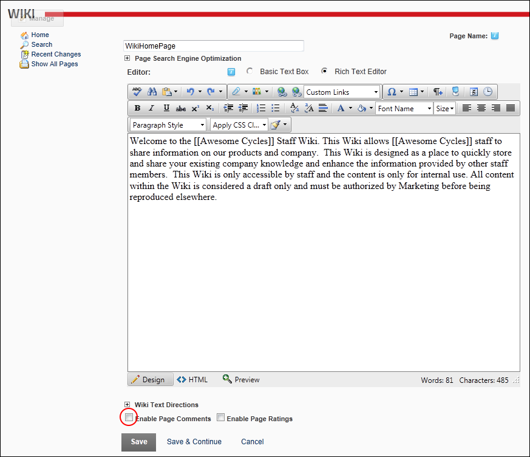

Disabling Comments on Individual Wiki Pages
How to disable comments from being added to one or more pages of the Wiki module. Note: This tutorial requires comments to be enabled for single Wiki pages.
- Navigate to a page where you want to disable comments.
- Click the Edit link.
- At Enable Page Comments, unmark
 the check box.
the check box.

- Click the Save button
- Repeat Steps 1-4 to disable comments on other pages.